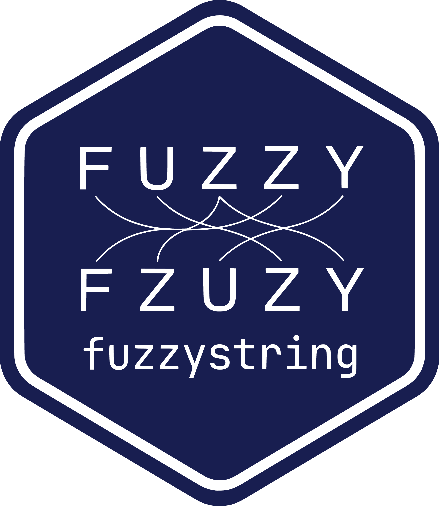

fuzzystring 
fuzzystring provides fast, flexible fuzzy string joins for data.frame and data.table objects using approximate string matching. It combines stringdist-based matching with a data.table backend and compiled C++ result assembly to reduce overhead in large joins while preserving standard join semantics.
Why fuzzystring?
Real-world identifiers rarely line up exactly. fuzzystring is designed for workloads such as:
- matching customer or company names with typos
- reconciling product catalogs with inconsistent labels
- linking survey responses to a controlled vocabulary
- joining reference tables to messy user input
The package includes:
- fuzzy
inner,left,right,full,semi, andantijoins - multiple
stringdistmethods, including OSA, Levenshtein, Damerau-Levenshtein, Jaro-Winkler, q-gram, cosine, jaccard, and soundex - output that preserves the class of
x(data.table, tibble, or basedata.frame) - optional distance columns for matched pairs
- case-insensitive matching
- adaptive candidate planning for single-column joins
- compiled C++ row expansion and result assembly across join modes
Installation
# Install from CRAN
install.packages("fuzzystring")
# Development version from GitHub
# pak::pak("PaulESantos/fuzzystring")
# remotes::install_github("PaulESantos/fuzzystring")Quick start
library(fuzzystring)
x <- data.frame(
name = c("Idea", "Premiom", "Very Good"),
id = 1:3
)
y <- data.frame(
approx_name = c("Ideal", "Premium", "VeryGood"),
grp = c("A", "B", "C")
)
fuzzystring_inner_join(
x, y,
by = c(name = "approx_name"),
max_dist = 2,
distance_col = "distance"
)Join families
fuzzystring_inner_join(x, y, by = c(name = "approx_name"), max_dist = 2)
fuzzystring_left_join(x, y, by = c(name = "approx_name"), max_dist = 2)
fuzzystring_right_join(x, y, by = c(name = "approx_name"), max_dist = 2)
fuzzystring_full_join(x, y, by = c(name = "approx_name"), max_dist = 2)
fuzzystring_semi_join(x, y, by = c(name = "approx_name"), max_dist = 2)
fuzzystring_anti_join(x, y, by = c(name = "approx_name"), max_dist = 2)Distance methods
fuzzystring_inner_join(x, y, by = c(name = "approx_name"), method = "osa")
fuzzystring_inner_join(x, y, by = c(name = "approx_name"), method = "dl")
fuzzystring_inner_join(x, y, by = c(name = "approx_name"), method = "jw")
fuzzystring_inner_join(x, y, by = c(name = "approx_name"), method = "soundex")Case-insensitive matching
fuzzystring_inner_join(
x, y,
by = c(name = "approx_name"),
ignore_case = TRUE,
max_dist = 1
)Included example data
The package ships with misspellings, a dataset of common misspellings adapted from Wikipedia for examples and testing.
Performance
fuzzystring keeps more of the join execution on a compiled path than the original fuzzyjoin implementation. In practice, the package combines:
-
data.tablegrouping and candidate planning - adaptive blocking for single-column string joins
- compiled row expansion, row binding, and final assembly
- type-preserving handling of dates, datetimes, factors, and list-columns
The benchmark article summarizes a precomputed comparison against fuzzyjoin::stringdist_join() using the same methods and sample sizes:
Multiple-column joins
fuzzystring_join() can match across more than one string column by applying the same distance method and threshold to each mapped column.
x_multi <- data.frame(
first = c("Jon", "Maira"),
last = c("Smyth", "Gonzales")
)
y_multi <- data.frame(
first_ref = c("John", "Maria"),
last_ref = c("Smith", "Gonzalez"),
id = 1:2
)
fuzzystring_inner_join(
x_multi, y_multi,
by = c(first = "first_ref", last = "last_ref"),
method = "osa",
max_dist = 1
)Related packages
- fuzzyjoin: original fuzzy join API that inspired this package
- stringdist: distance metrics
- data.table: high-performance tabular backend